library(tidyverse)
library(cowplot)Investigating the Efficacy of a Novel Peptide in Inhibiting a Key Antibiotic Resistance Enzyme in Escherichia coli
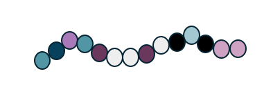
Background information
My data looks at Escherichia coli growth over a 24h period in a 96-well plate when treated with 2 drugs: ampicillin and a novel 14-amino acid peptide. The plate will have increasing concentration gradients of each drug along the x and y axis, respectively, along with an inoculum of bacteria (1 strain per plate) in each well.
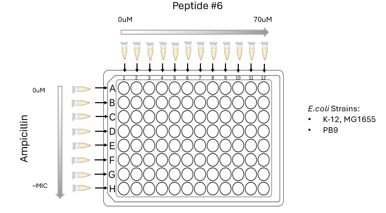
The E.coli test strain contains an plasmid borne enzyme (TEM-1) that confers resistance to ampicillin. The novel peptide is proven to bind to and inhibit TEM-1 in-vitro, so we are seeing if it can also inhibit TEM-1 in bacterial cells.
For the test strain (E.coli PB9) which contains TEM-1, we are hoping to see that ampicillin’s efficacy is restored with the addition of our peptide. If the peptide inhibits TEM-1, then TEM-1 is not available to degrade ampicillin, so ampicillin is able to enact its bactericidal effect by targeting a key enzyme in the bacterial cell wall.
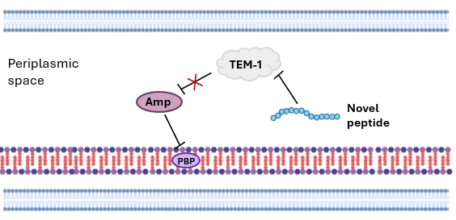
Ideally, we hope to see that with increasing peptide concentrations, the amount of ampicillin required to kill the bacteria decreases. Additionally, there will be a control E.coli strain which does not contain TEM-1. For this strain, we would expect to see only a response in growth to ampicillin and not peptide. It’s growth across the plate should only change vertically with ampicillin concentration, and not horizontally with the peptide because it does not contain TEM-1 (the enzyme that we hope the peptide inhibits) so it is more susceptible to ampicillin. We will ultimately compare the growth patterns of the TEM-1 containing PB9 strain to that of the MG1655 control.
Questions I hope to answer in my analysis:
- does growth decrease with increasing ampicillin concentration?
- does growth decrease with increasing peptide concentration?
- do peptide and ampicillin together lower the amount of ampicillin that is required to inhibit bacterial growth?
- is this change in decreased growth noticeable and different from the control?
Analysis of data
Loading packages for analysis
Reading in E.coli PB9 growth curve data & cleaning & wrangling it.
This data comes in the format with time, temperature and well columns. The well columns contain the OD600 (absorbance at 600nm wavelength) at each time point for each well.
Code
OD_time_info <- read_csv(
"growthcurvedata/checkerboard_PB9_amp_EP6_250219_input.csv",
show_col_types = F)
head(OD_time_info, 3)# A tibble: 3 × 98
Time `T° 600` A1 A2 A3 A4 A5 A6 A7 A8 A9 A10
<time> <dbl> <dbl> <dbl> <dbl> <dbl> <dbl> <dbl> <dbl> <dbl> <dbl> <dbl>
1 00:00:22 26 0.094 0.092 0.093 0.582 0.106 0.099 0.101 0.187 0.102 0.593
2 00:30:22 36.9 0.094 0.092 0.092 0.096 0.098 0.094 0.095 0.096 0.097 0.097
3 01:00:22 37 0.094 0.092 0.092 0.096 0.098 0.095 0.095 0.096 0.098 0.098
# ℹ 86 more variables: A11 <dbl>, A12 <dbl>, B1 <dbl>, B2 <dbl>, B3 <dbl>,
# B4 <dbl>, B5 <dbl>, B6 <dbl>, B7 <dbl>, B8 <dbl>, B9 <dbl>, B10 <dbl>,
# B11 <dbl>, B12 <dbl>, C1 <dbl>, C2 <dbl>, C3 <dbl>, C4 <dbl>, C5 <dbl>,
# C6 <dbl>, C7 <dbl>, C8 <dbl>, C9 <dbl>, C10 <dbl>, C11 <dbl>, C12 <dbl>,
# D1 <dbl>, D2 <dbl>, D3 <dbl>, D4 <dbl>, D5 <dbl>, D6 <dbl>, D7 <dbl>,
# D8 <dbl>, D9 <dbl>, D10 <dbl>, D11 <dbl>, D12 <dbl>, E1 <dbl>, E2 <dbl>,
# E3 <dbl>, E4 <dbl>, E5 <dbl>, E6 <dbl>, E7 <dbl>, E8 <dbl>, E9 <dbl>, …names(OD_time_info) #there are time, temperature, and well columns [1] "Time" "T° 600" "A1" "A2" "A3" "A4" "A5" "A6"
[9] "A7" "A8" "A9" "A10" "A11" "A12" "B1" "B2"
[17] "B3" "B4" "B5" "B6" "B7" "B8" "B9" "B10"
[25] "B11" "B12" "C1" "C2" "C3" "C4" "C5" "C6"
[33] "C7" "C8" "C9" "C10" "C11" "C12" "D1" "D2"
[41] "D3" "D4" "D5" "D6" "D7" "D8" "D9" "D10"
[49] "D11" "D12" "E1" "E2" "E3" "E4" "E5" "E6"
[57] "E7" "E8" "E9" "E10" "E11" "E12" "F1" "F2"
[65] "F3" "F4" "F5" "F6" "F7" "F8" "F9" "F10"
[73] "F11" "F12" "G1" "G2" "G3" "G4" "G5" "G6"
[81] "G7" "G8" "G9" "G10" "G11" "G12" "H1" "H2"
[89] "H3" "H4" "H5" "H6" "H7" "H8" "H9" "H10"
[97] "H11" "H12" head(OD_time_info$Time) #Time column: time is given as hours:minutes:seconds00:00:22
00:30:22
01:00:22
01:30:22
02:00:22
02:30:22min(OD_time_info$Time) #starts at 22 secondsTime difference of 22 secsmax(OD_time_info$Time / 3600) #ends at 24h and 22sTime difference of 24.00611 secs#Note: the times are in time differences and not numeric.
length(OD_time_info$Time) #49 time readings (every 30min for 24h) as expected.[1] 49Make new time column containing just the time in hours as a decimal:
Code
makenewtime <- function(df){
df <- mutate(df, newtime = (as.numeric(df$Time) - df$Time[1]) / 3600)
df$newtime <- as.numeric(df$newtime) #recognized as a number, not a time in seconds
return(df)
#subtract the seconds because this will change slightly from plate to plate, depending on how long the plate is shaken for (15 or 20s). Also divide by 3600s/h
}
OD_time_info <- makenewtime(OD_time_info) #column added
print(OD_time_info$newtime) #looks good. [1] 0.0 0.5 1.0 1.5 2.0 2.5 3.0 3.5 4.0 4.5 5.0 5.5 6.0 6.5 7.0
[16] 7.5 8.0 8.5 9.0 9.5 10.0 10.5 11.0 11.5 12.0 12.5 13.0 13.5 14.0 14.5
[31] 15.0 15.5 16.0 16.5 17.0 17.5 18.0 18.5 19.0 19.5 20.0 20.5 21.0 21.5 22.0
[46] 22.5 23.0 23.5 24.0Code
class(OD_time_info$newtime)[1] "numeric"I will remove the temperature column which gives the temperature of the plate reader at each reading. This data will not be used.
Code
OD_time_info <- OD_time_info[,-2] #removing Temp column from dataNow looking at the well columns. These are represented as a column for each well from 0 to 24h (NOT TIDY!). Each column contains an OD600 reading.
Code
OD_time_info[,2:ncol(OD_time_info)] %>% head(3) #each column contains an OD600 reading# A tibble: 3 × 97
A1 A2 A3 A4 A5 A6 A7 A8 A9 A10 A11 A12 B1
<dbl> <dbl> <dbl> <dbl> <dbl> <dbl> <dbl> <dbl> <dbl> <dbl> <dbl> <dbl> <dbl>
1 0.094 0.092 0.093 0.582 0.106 0.099 0.101 0.187 0.102 0.593 0.128 0.114 0.093
2 0.094 0.092 0.092 0.096 0.098 0.094 0.095 0.096 0.097 0.097 0.101 0.104 0.097
3 0.094 0.092 0.092 0.096 0.098 0.095 0.095 0.096 0.098 0.098 0.101 0.103 0.098
# ℹ 84 more variables: B2 <dbl>, B3 <dbl>, B4 <dbl>, B5 <dbl>, B6 <dbl>,
# B7 <dbl>, B8 <dbl>, B9 <dbl>, B10 <dbl>, B11 <dbl>, B12 <dbl>, C1 <dbl>,
# C2 <dbl>, C3 <dbl>, C4 <dbl>, C5 <dbl>, C6 <dbl>, C7 <dbl>, C8 <dbl>,
# C9 <dbl>, C10 <dbl>, C11 <dbl>, C12 <dbl>, D1 <dbl>, D2 <dbl>, D3 <dbl>,
# D4 <dbl>, D5 <dbl>, D6 <dbl>, D7 <dbl>, D8 <dbl>, D9 <dbl>, D10 <dbl>,
# D11 <dbl>, D12 <dbl>, E1 <dbl>, E2 <dbl>, E3 <dbl>, E4 <dbl>, E5 <dbl>,
# E6 <dbl>, E7 <dbl>, E8 <dbl>, E9 <dbl>, E10 <dbl>, E11 <dbl>, E12 <dbl>, …Double checking that each column has 49 readings and no NAs:
Code
checklength_and_NAs <- function(df){
for (i in 2:97){
#checking 49 readings
if (as.numeric(nrow(df[,i]) != 49)){
print(paste(
"length of column", names(df[i]), "is not 49, it's", nrow(df[,i])))
}
#checking NAs
if (sum(is.na(df[,i])) != 0){
print(paste("column", names(df[i]), "has", sum(is.na(df[,i])), "NAs"))
}
}
}
checklength_and_NAs(OD_time_info)
#if nothing prints there are no problems.looks good.
Now convert table to long format.
Code
#convert to long format
pivotlong_gc <- function(df){
df <- pivot_longer(df, cols = A1:H12,
names_to = "well",
values_to = "OD600")
print(df %>% head(3))
print(paste("nrow: ", nrow(df))) #this is good because 96 * 49 = 4704
return(df)
}
long_OD_time_info <- pivotlong_gc(OD_time_info)# A tibble: 3 × 4
Time newtime well OD600
<time> <dbl> <chr> <dbl>
1 00'22" 0 A1 0.094
2 00'22" 0 A2 0.092
3 00'22" 0 A3 0.093
[1] "nrow: 4704"Now Checking that there are no weird OD values:
Code
distributionOD <- function(df, title){
plot <- df %>%
ggplot(aes(x = OD600)) +
geom_histogram(fill = "#043927", bins = 40) +
labs(title = title) +
theme_light()
return(plot)
}
distributionOD(long_OD_time_info, "Distribution of OD600 well readings for a 24h E.coli growth curve")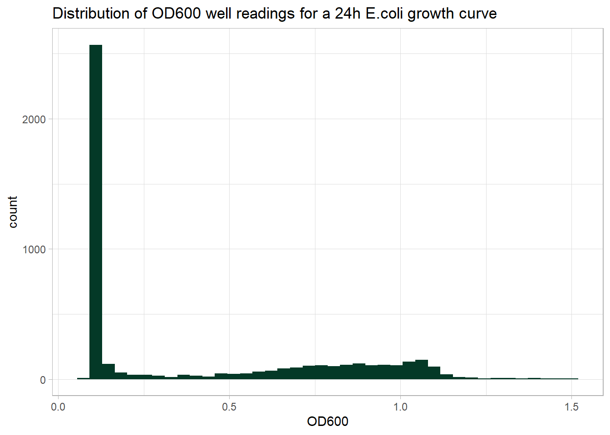
This is good. OD readings should be above 0, and not too far above 1. Also having a lot of readings near 0 makes sense as not all wells will have growth and also many wells before the 10ish hour mark will have very minimal growth.
Now add 2 new columns: ‘column’ and ‘row’ which will be used later for graphing.
Code
addcolumnrow <- function(df){
df <- mutate(df, row = substr(df$well, start = 1, stop = 1),
column = substr(df$well, start = 2, stop = length(df$well)) )
#make it see column numbers as discrete variables (not contiuous), needed for graphing
df$column <- factor(df$column, levels = df$column[1:12])
print(df %>% head(3)) #the 2 new columns are there
return(df)
}
long_OD_time_info <- addcolumnrow(long_OD_time_info) # A tibble: 3 × 6
Time newtime well OD600 row column
<time> <dbl> <chr> <dbl> <chr> <fct>
1 00'22" 0 A1 0.094 A 1
2 00'22" 0 A2 0.092 A 2
3 00'22" 0 A3 0.093 A 3 looks good.
Reading in drug concentration data
Now I need to read in a new file ‘PB9_drugconcs.csv’. This gives the ampicillin and peptide concentration used for each row or column (respectively) for this checkerboard. This information will need to be wrangled so it can be added to the PB9 growth curve data.
Code
drugconcs <- read_csv("drugconcs/PB9_drugconcs.csv", show_col_types = F)
head(drugconcs, 3) #values in uM or ug/mL# A tibble: 3 × 4
ampconc_ugml pepconc_ugml ampconc_uM pepconc_uM
<dbl> <dbl> <dbl> <dbl>
1 0 0 0 0
2 300 4 808 2.5
3 500 9 1346 5 We only need the \(\mu M\) columns, so \(\mu g/mL\) will be removed. We do not need to remove NAs because there are only 8 ampicillin rows which will be indexed for accordingly.
Code
drugconcs <- select(drugconcs, ampconc_uM, pepconc_uM) #remove ug/mL
print(drugconcs)# A tibble: 12 × 2
ampconc_uM pepconc_uM
<dbl> <dbl>
1 0 0
2 808 2.5
3 1346 5
4 1885 10
5 2423 15
6 2962 20
7 3500 25
8 4039 30
9 NA 40
10 NA 50
11 NA 60
12 NA 70 Now we will add these drug concentration values to their respective rows / columns in the original dataframe.
Code
adddrugconcs <- function(dfgc, dfdc){
dfgc <- dfgc %>% mutate(amp_uM = case_when(
dfgc$row == "A" ~ dfdc$ampconc_uM[1],
dfgc$row == "B" ~ dfdc$ampconc_uM[2],
dfgc$row == "C" ~ dfdc$ampconc_uM[3],
dfgc$row == "D" ~ dfdc$ampconc_uM[4],
dfgc$row == "E" ~ dfdc$ampconc_uM[5],
dfgc$row == "F" ~ dfdc$ampconc_uM[6],
dfgc$row == "G" ~ dfdc$ampconc_uM[7],
dfgc$row == "H" ~ dfdc$ampconc_uM[8]),
pep_uM = case_when(dfgc$column == 1 ~ dfdc$pepconc_uM[1],
dfgc$column == 2 ~ dfdc$pepconc_uM[2],
dfgc$column == 3 ~ dfdc$pepconc_uM[3],
dfgc$column == 4 ~ dfdc$pepconc_uM[4],
dfgc$column == 5 ~ dfdc$pepconc_uM[5],
dfgc$column == 6 ~ dfdc$pepconc_uM[6],
dfgc$column == 7 ~ dfdc$pepconc_uM[7],
dfgc$column == 8 ~ dfdc$pepconc_uM[8],
dfgc$column == 9 ~ dfdc$pepconc_uM[9],
dfgc$column == 10 ~ dfdc$pepconc_uM[10],
dfgc$column == 11 ~ dfdc$pepconc_uM[11],
dfgc$column == 12 ~ dfdc$pepconc_uM[12])
)
#make these concentrations factors, so the graphs will work properly later!
#(discrete values!)
dfgc$amp_uM <- factor(dfgc$amp_uM, levels = dfgc$amp_uM[seq(1, 96, by=12)])
dfgc$pep_uM <- factor(dfgc$pep_uM, levels = na.omit(dfgc$pep_uM[1:12]))
print(dfgc %>% head(3))
return(dfgc)
}
long_OD_time_info <- adddrugconcs(long_OD_time_info, drugconcs) # A tibble: 3 × 8
Time newtime well OD600 row column amp_uM pep_uM
<time> <dbl> <chr> <dbl> <chr> <fct> <fct> <fct>
1 00'22" 0 A1 0.094 A 1 0 0
2 00'22" 0 A2 0.092 A 2 0 2.5
3 00'22" 0 A3 0.093 A 3 0 5 It looks like the new columns have been added!
Reading in background absorbance value data and wrangling
Now we will read in the background OD600 data from a separate csv file. This is a single time OD600 reading plate with only media in it. It needs to be subtracted as background absorbance values from the growth curve data.
Code
bgOD <- read_csv("background/camhb_bg_input.csv", show_col_types = F)New names:
• `` -> `...1`Code
head(bgOD)# A tibble: 6 × 13
...1 `1` `2` `3` `4` `5` `6` `7` `8` `9` `10` `11` `12`
<chr> <dbl> <dbl> <dbl> <dbl> <dbl> <dbl> <dbl> <dbl> <dbl> <dbl> <dbl> <dbl>
1 A 0.092 0.093 0.094 0.095 0.094 0.093 0.093 0.092 0.092 0.093 0.092 0.093
2 B 0.092 0.093 0.093 0.094 0.094 0.093 0.092 0.092 0.092 0.091 0.091 0.091
3 C 0.093 0.092 0.093 0.093 0.092 0.092 0.092 0.092 0.092 0.092 0.092 0.092
4 D 0.093 0.092 0.094 0.093 0.093 0.093 0.092 0.092 0.092 0.093 0.092 0.092
5 E 0.093 0.092 0.093 0.092 0.092 0.091 0.091 0.092 0.092 0.093 0.092 0.092
6 F 0.092 0.092 0.093 0.092 0.091 0.093 0.091 0.091 0.091 0.092 0.091 0.092column names ‘…1’ needs to be fixed for clarity. The other columns probably shouldn’t have back ticks, but we won’t be working with this data for long, so it is not necessary to fix them.
Now I will fix the name of column 1 and format the table so that it is tidy and long format so it can be subtracted from growth curve data.
Code
bgOD <- rename(bgOD, row = ...1) #fix name of column 1, rename it 'row'
#use pivot longer, so this data can be used with above OD_time data
bgOD <- pivot_longer(bgOD, cols = `1`:`12`,
names_to = "column",
values_to = "OD600")
print(head(bgOD, 3)) # A tibble: 3 × 3
row column OD600
<chr> <chr> <dbl>
1 A 1 0.092
2 A 2 0.093
3 A 3 0.094looks good.
Add column ‘well’ so I can make sure the wells are in the same order as the growth curve data so that vectors line up before I subtract them.
Code
bgOD <- mutate(bgOD, well = paste0(row, column))
bgOD[seq(1, 96, by = 12),] #looks good.# A tibble: 8 × 4
row column OD600 well
<chr> <chr> <dbl> <chr>
1 A 1 0.092 A1
2 B 1 0.092 B1
3 C 1 0.093 C1
4 D 1 0.093 D1
5 E 1 0.093 E1
6 F 1 0.092 F1
7 G 1 0.092 G1
8 H 1 0.092 H1 Double checking the range of OD600 values from the background data:
Code
range(bgOD$OD600)[1] 0.091 0.100It is good that the range is small because all wells just contain media, so they are the same and should contain little variation. 0.1 is quite low too which is what we expect as there is no bacterial growth in this media control plate.
Checking the background and original growth curve data vectors align:
long_OD_time_info$well[1:96] == bgOD$well [1] TRUE TRUE TRUE TRUE TRUE TRUE TRUE TRUE TRUE TRUE TRUE TRUE TRUE TRUE TRUE
[16] TRUE TRUE TRUE TRUE TRUE TRUE TRUE TRUE TRUE TRUE TRUE TRUE TRUE TRUE TRUE
[31] TRUE TRUE TRUE TRUE TRUE TRUE TRUE TRUE TRUE TRUE TRUE TRUE TRUE TRUE TRUE
[46] TRUE TRUE TRUE TRUE TRUE TRUE TRUE TRUE TRUE TRUE TRUE TRUE TRUE TRUE TRUE
[61] TRUE TRUE TRUE TRUE TRUE TRUE TRUE TRUE TRUE TRUE TRUE TRUE TRUE TRUE TRUE
[76] TRUE TRUE TRUE TRUE TRUE TRUE TRUE TRUE TRUE TRUE TRUE TRUE TRUE TRUE TRUE
[91] TRUE TRUE TRUE TRUE TRUE TRUEYes, they do! This means they can be subtracted.
Now that we know the background wells and test plate wells are in the same order, I will subtract the background absorbance values from the original absorbance values in the growth curve data.
long_OD_time_info$OD600 <- long_OD_time_info$OD600 - bgOD$OD600Checking that the range after subtraction is good:
range(long_OD_time_info$OD600) [1] -0.008 1.426Once background is subtracted, OD is mostly above 0. Being slightly below 0 is okay as long as it’s not too far below, so all looks good here.
Initial look at the growth curve data
Growth curves for control column and row First I will look at the control column and row (row 1 and column 1) which only have one drug type each. This will offer insight into how the bacteria is responding to each drug individually. We would expect lower growth in the ampicillin only column as ampicillin concentrations increase. We would also expect the same amount of growth in the peptide only row as peptide concentrations increase because the peptide is not beleived to be bactericidal on its own.
Code
rowAplot2 <- long_OD_time_info %>% #testing plots on one row (row A)
filter(row == "A") %>%
ggplot(aes(x = newtime, y = OD600, color = pep_uM)) +
geom_line() +
labs(x = "Time (hours)",
title = "24h growth curve of E.coli PB9 \nat ampicillin concentration 0 and varying peptide concs",
color = "Peptide \nConc. (\u00B5M)") +
geom_point() +
theme_minimal()
print(rowAplot2)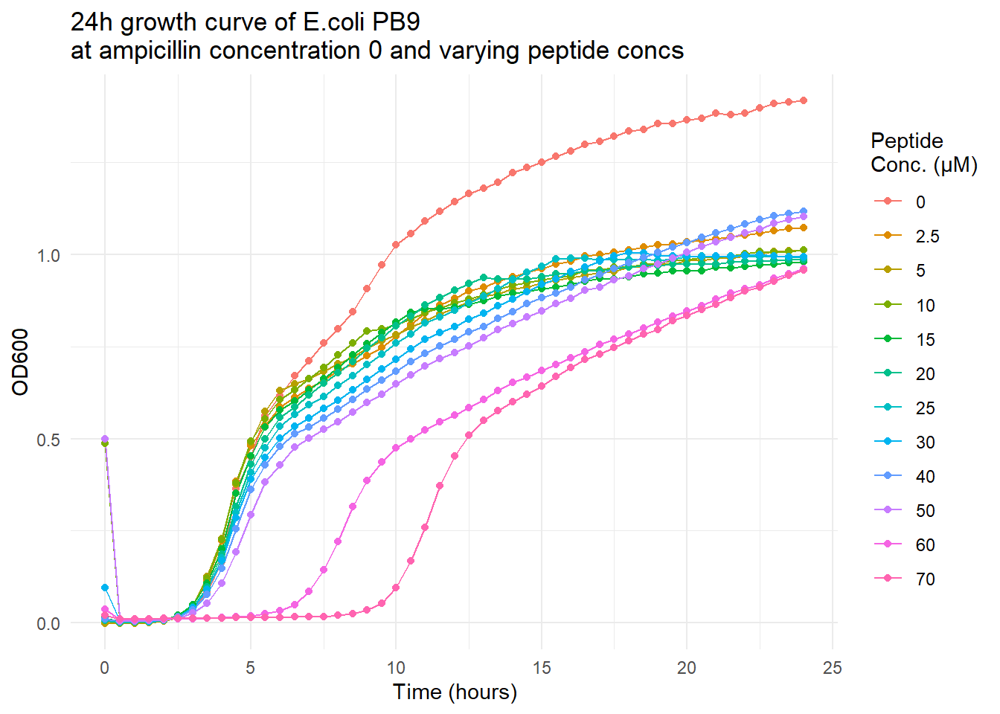
Another thing to note from these plots is that the OD reading often starts off high and drops within the first hour. This is likely due to condensation under the plate lid as the plate gets up to temperature. Also it could be from bubbles caused by the DMSO that the peptide is dissolved in. These generally pop over time when the plate is shaken every 30min. However this drop is kind of confusing to the overall trend, so going forward I will remove time points from the first hour, because they are not representative of actual bacterial growth.
When looking at the first row above. It appears as though the peptide on its own at higher concentrations is resulting in decreased bacteria growth. This is surprising, and suggests maybe the peptide does have some bactericidal effects on its own. Or perhaps some other unforeseen effect is at play.
Next, I will remove first hour points to test that this looks good and plot the control row (0 \(\mu M\) peptide).
Code
makesinglerowplotpep <- function(df, title){
#no ampicillin row
p1 <- df%>%
filter(amp_uM == 0 & newtime > 1) %>%
ggplot(aes(x = newtime, y = OD600, color = pep_uM)) +
geom_point() +
labs(x = "Time (hours)", color = "Peptide \nConcentration (\u00B5M)", title = title) +
geom_line() +
theme_minimal()
return(p1)
}
makesinglerowplotpep(long_OD_time_info,
"24h growth curve of E.coli PB9 \nat ampicillin concentration 0")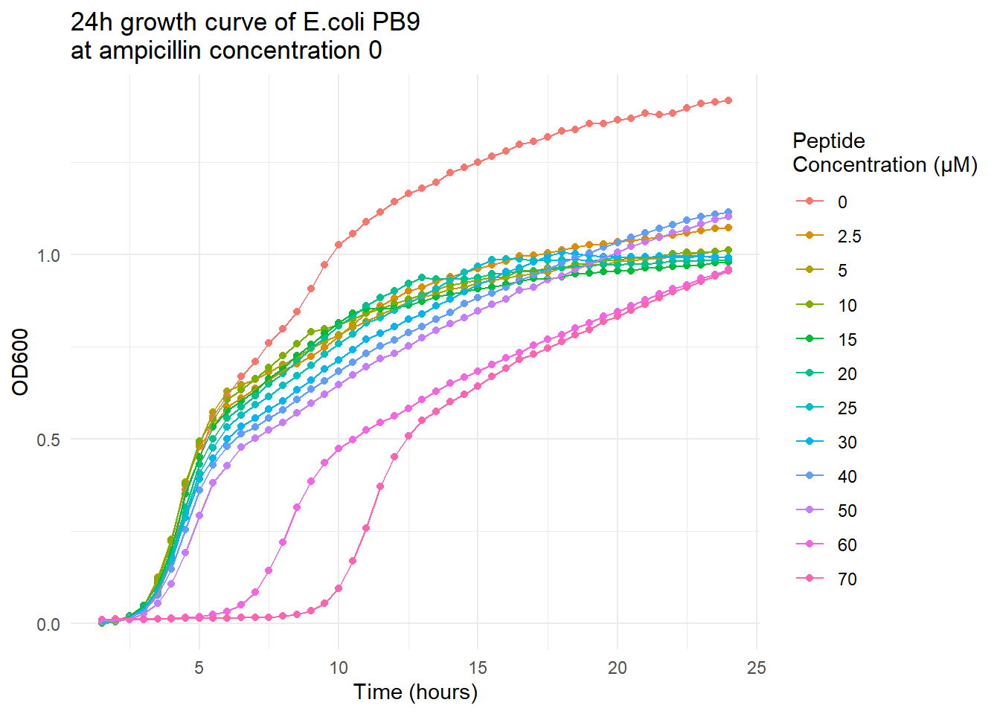
Code
makesinglerowplotamp <- function(df, title){
#no peptide column
p2 <- df %>%
filter(pep_uM == 0 & newtime > 1) %>%
ggplot(aes(x = newtime, y = OD600, color = amp_uM)) +
geom_point() +
labs(x = "Time (hours)",
color = "ampicillin \nconc (\u00B5M)",
title = title) +
geom_line() +
theme_minimal()
print(p2)
}
makesinglerowplotamp(long_OD_time_info,
"24h growth curve of E.coli PB9 \nat a peptide concentration of 0")
There is also definitely a decrease in bacterial growth with increasing ampicillin concentration. This makes sense, given that ampicillin is a bactericidal agent. Overall, the OD600 also appears to go down as peptide concentration increases.
Growth Curve Plots for Whole Checkerboard
Code
make_allwellgc <- function(df, title){
allwellplot <- df %>%
filter(newtime > 1) %>%
ggplot(aes(x = newtime, y = OD600)) +
geom_point(color = "blue", size = 0.2) +
geom_line(color = "blue", linewidth = 0.5) +
geom_area(fill = "lightblue") +
labs(x = "Time (hours)", title = title) +
facet_grid(amp_uM ~ pep_uM, scales = "fixed") +
scale_y_continuous(breaks = seq(0, 1.5, 0.5),
sec.axis = sec_axis(~ . ,
name = "Ampicillin Concentration (\u00B5M)",
breaks = NULL, labels = NULL)) +
scale_x_continuous(breaks = seq(0, 24, 4),
sec.axis = sec_axis(~ . ,
name = "Peptide Concentration (\u00B5M)",
breaks = NULL, labels = NULL)) +
theme(
axis.title.x = element_text(size = 12), # Increase x-axis label
axis.title.y = element_text(size = 12), # Increase y-axis label
axis.text.x = element_text(size = 4), # Increase x-axis scale values
axis.text.y = element_text(size = 6), # Increase y-axis scale values
axis.title.y.right = element_text(size = 12),
axis.title.x.top = element_text(size = 12),
plot.margin = unit(c(1, 1, 1, 1), "cm")
)
return(allwellplot)
}
allwellplot <- make_allwellgc(long_OD_time_info, "Growth curve of checkerboard assay for TEM-1 containing E.coli PB8")
#save plot to put image in quarto file t
ggsave2(plot = allwellplot,
filename = "plots/PB9_allwellplot.jpeg",
width = 24, height = 16, units = "cm")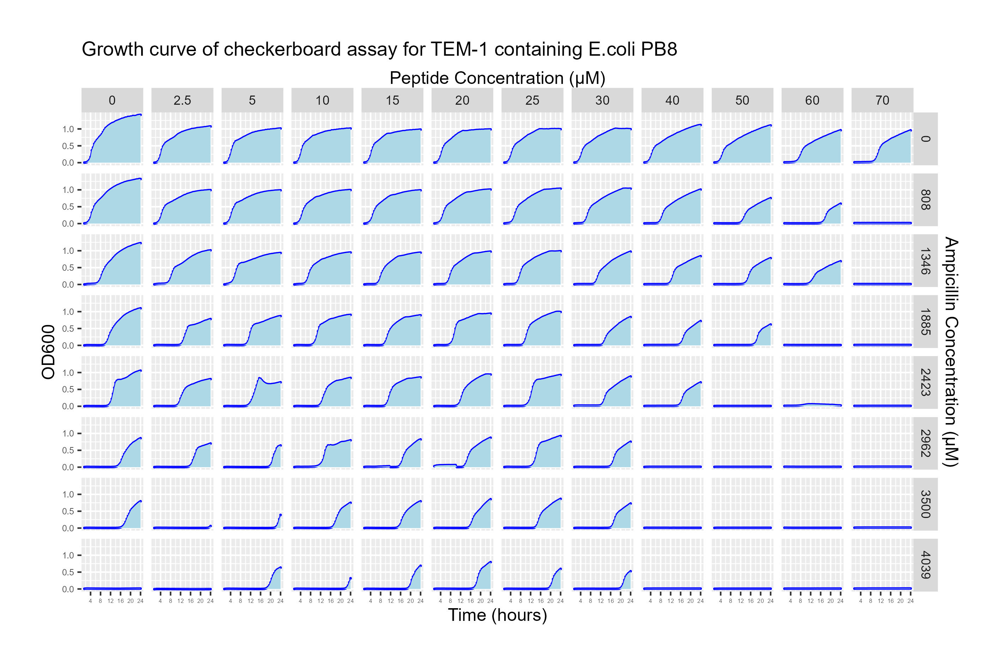 Overall, I think this is a promising sign that the peptide is working! As peptide increases, the general trend is lack of growth at lower ampicillin concentrations. For example at 0\(\mu M\) peptide, 4039\(\mu M\) of ampicillin is required to kill the bacteria. At 50 \(\mu M\) of peptide, only 2423\(\mu M\) of peptide is required to kill the bacteria. At 70\(\mu M\) of peptide, only 808\(\mu M\) of peptide is required to inhibit growth!
Additionally, it would appear that there is an increase in lag time of growth with increasing peptide concentrations. This means the peptide is still affecting growth even if it is not completely inhibiting it.
Calculating the Area Under the Curve (AUC)
Perhaps to account for factors like changes in lag time, we could use area under the curve (AUC) to quantify growth over time. I will now do some work to acquire the AUC and visualize it.
A function to calculate the AUC.
Code
calculatingarea <- function(data, i){
#use area of a trapezoid equation to determine area between 2 points, then sum them up
height <- lead(data$newtime) - data$newtime
height <- as.numeric(height) #it was returning it as a difftime object
base1 <- data$OD600
base2 <- lead(data$OD600)
Area <- (base1 + base2)*height/2
Area <- na.omit(Area)
return(sum(Area))
}Storing the AUCs in a vector for all 96 wells:
Code
wellnums <- unique(long_OD_time_info$well)
areavector <- function(df){
allareas <- c()
for (i in 1:(nrow(df)/49)) {
A <- df %>%
filter(well == wellnums[[i]]) %>%
calculatingarea(i)
allareas <- c(allareas, A)
}
return(round(allareas, 2))
}
allareas <- areavector(long_OD_time_info)
print(allareas[1:10]) [1] 22.17 17.46 16.98 17.28 16.68 16.89 16.73 16.30 16.19 15.61Successfully calculated AUC.
Adding the AUCs to the original data frame
Code
#now I will add the area data to the original data frame to do some work with it.
long_OD_time_info <- long_OD_time_info %>%
mutate(area = rep(allareas, 49))
#because area values correspond to the same order as well numbers, can just multiply them to match the same length. Double checking… the same well for all time points should have the same area.
Code
long_OD_time_info %>%
filter(well == "A1") %>%
select(area) %>%
unique() %>%
length()[1] 1This looks good, the area for A1 for example at all time points is only has 1 AUC.
Heatmap of AUC
I will visualize this data using a heatmap to see if overall growth as represented by AUC is higher with lower drug concentrations and vise versa.
Code
makeheatmap <- function(df, title){
#first I'm going to change the direction of the ampicillin factor, because I am used to visualizing checkerbaords with (0,0) in the top left corner.
df$amp_uM <- factor(df$amp_uM, levels = rev(unique(df$amp_uM)))
df%>%
ggplot(aes(x = pep_uM, y = amp_uM, fill = area)) +
geom_tile() +
scale_x_discrete(position = "top") +
labs(x = "Peptide Concentration (\u00B5M)",
y = "Ampicillin Concentration (\u00B5M)",
fill = "Area",
title = title) +
theme(
panel.background = element_blank(), #this removes gray around the edges
plot.background = element_blank(),
panel.border = element_blank(),
plot.title = element_text(size = 10)
)
}
PB9_hmap <- makeheatmap(long_OD_time_info,
title = "Heatmap of area under the curve for each well in a Checkerboard \nfor TEM-1 ncontaining E.coli PB9")
#PB9_hmap
#saving image
ggsave2(plot = PB9_hmap, filename = "plots/PB9_hmap.jpeg", width = 12, height = 8, units = "cm")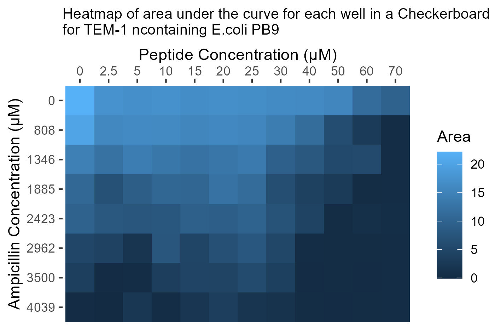 This gives the same visual as the growth curve really. There is less curve area as concentrations for both drugs increase. Overall, this supports the same conclusion as above: that the peptide is effectively inhibiting TEM-1 allowing ampicillin to inhibit bacterial growth.
Comparison of PB9 data to control MG1655 E.coli Strain.
Since a lot of the explanations for the data checking/wrangling have been done above, we will go faster for the control strain. Basically, for this checkerboard we want to see no response to peptide. Whereas for the above test strain we did want to see a response to peptide.
Read in growth curve data for MG1655
Code
MG1655_gc <- read_csv("./growthcurvedata/checkerboard_MG1655_amp_EP6_250123_input.csv", show_col_types = F)
names(MG1655_gc) [1] "Time" "T° 600" "A1" "A2" "A3" "A4" "A5" "A6"
[9] "A7" "A8" "A9" "A10" "A11" "A12" "B1" "B2"
[17] "B3" "B4" "B5" "B6" "B7" "B8" "B9" "B10"
[25] "B11" "B12" "C1" "C2" "C3" "C4" "C5" "C6"
[33] "C7" "C8" "C9" "C10" "C11" "C12" "D1" "D2"
[41] "D3" "D4" "D5" "D6" "D7" "D8" "D9" "D10"
[49] "D11" "D12" "E1" "E2" "E3" "E4" "E5" "E6"
[57] "E7" "E8" "E9" "E10" "E11" "E12" "F1" "F2"
[65] "F3" "F4" "F5" "F6" "F7" "F8" "F9" "F10"
[73] "F11" "F12" "G1" "G2" "G3" "G4" "G5" "G6"
[81] "G7" "G8" "G9" "G10" "G11" "G12" "H1" "H2"
[89] "H3" "H4" "H5" "H6" "H7" "H8" "H9" "H10"
[97] "H11" "H12" The layout is the same as PB9 strain, with time, temperature and well columns.
Removing Temp column, check for NAs and 49 time points:.
Code
MG1655_gc <- MG1655_gc[,-2] #remove Temp column because it's useless
checklength_and_NAs(MG1655_gc) #no NAs, all columns are 49 timepoints.All good.
Make newtime column, make long formatted table so it is tidy, and make ‘column’ and ‘row’ columns:
Code
MG1655_gc <- makenewtime(MG1655_gc) #make newtime column
MG1655_gc <- pivotlong_gc(MG1655_gc) #pivot longer# A tibble: 3 × 4
Time newtime well OD600
<time> <dbl> <chr> <dbl>
1 00'00" 0 A1 0.154
2 00'00" 0 A2 0.165
3 00'00" 0 A3 0.155
[1] "nrow: 4704"Code
MG1655_gc <- addcolumnrow(MG1655_gc) #add column and row columns# A tibble: 3 × 6
Time newtime well OD600 row column
<time> <dbl> <chr> <dbl> <chr> <fct>
1 00'00" 0 A1 0.154 A 1
2 00'00" 0 A2 0.165 A 2
3 00'00" 0 A3 0.155 A 3 Read in the drug concentrations for this file
Code
MG1655drugconcs <- read_csv("drugconcs/MG1655_drugconcs.csv", show_col_types = F) #read in drug concs
head(MG1655drugconcs) # A tibble: 6 × 4
ampconc_ugml pepconc_ugml ampconc_uM pepconc_uM
<dbl> <dbl> <dbl> <dbl>
1 0 NA 0 NA
2 1 0 3 0
3 2 18 5 10
4 4 36 11 20
5 6 45 16 25
6 8 53 22 30There are more NAs, this is because I did not use the first column and last column on the 96-well plate when I was doing the checkerboard. I will need to remove these NAs later. Later I need to repeat this experiment and do a full control using all wells.
Add drug concs to the main MG1655 growth curve data frame:
Code
MG1655_gc <- adddrugconcs(MG1655_gc, MG1655drugconcs) #looks good.# A tibble: 3 × 8
Time newtime well OD600 row column amp_uM pep_uM
<time> <dbl> <chr> <dbl> <chr> <fct> <fct> <fct>
1 00'00" 0 A1 0.154 A 1 0 <NA>
2 00'00" 0 A2 0.165 A 2 0 0
3 00'00" 0 A3 0.155 A 3 0 10 Subtract background OD600:
Code
MG1655_gc$OD600 <- MG1655_gc$OD600 - bgOD$OD600
range(MG1655_gc$OD600) #looks good (a little below 0 is fine)[1] -0.013 1.091Now we can remove the rows containing NAs
Code
MG1655_gc <- na.omit(MG1655_gc)Make control row and control column plots:
Code
makesinglerowplotamp(MG1655_gc,
title = "24h growth curve of E.coli MG1655 control strain \ntreated without peptide")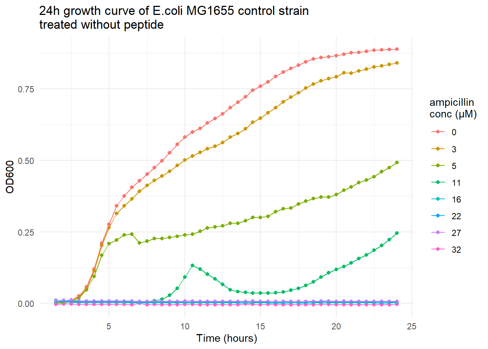
MG16155 is responding as expected to ampicillin, with higher concentrations of drug resulting in less growth.
Code
makesinglerowplotpep(MG1655_gc,
title = "24h growth curve of E.coli MG1655 control strain \ntreated without ampicillin")
I think this looks good. Regardless of the peptide concentration, the wells pretty much grow the same. This makes sense as there is no TEM-1 for the peptide to inhibit. Interesting that peptide only appeared to have an effect in the PB9 test strain but not in the control strain.
Growth Curves for MG1655 Checkerboard.
Code
MG1655plot <- make_allwellgc(MG1655_gc,
title = "24h Growth curve of Checkerboard assay for MG1655 control strain.")
ggsave2(plot = MG1655plot, filename = "plots/MG1655_allwellplot.jpeg", width = 24, height = 16, units = "cm")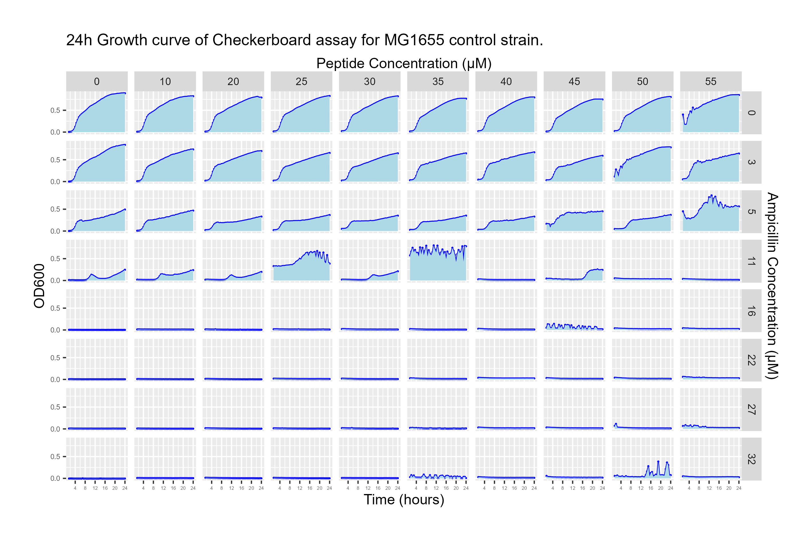 This one appears pretty consistent across the x axis, meaning the peptide is having little effect on growth (this is what we expect.) Growth is inhibited at 11-16\(\mu M\) of ampicillin which is a low amount that we would expect for a non-resistant strain of bacteria. The jagged growth in well D6 appears to be just noise, but a replicate plate will need to be run anyways.
Doing AUC Analyses for MG1655
Calculating AUC and adding to growth curve data
Code
wellnums <- unique(MG1655_gc$well)
MG1655areas <- areavector(MG1655_gc)
MG1655areas [1] 13.54 12.78 12.12 12.25 12.24 11.59 11.96 11.31 12.00 15.60 12.07 10.88
[13] 10.55 9.61 9.44 10.07 10.60 8.76 13.59 10.19 6.19 6.59 4.54 5.28
[25] 5.21 4.91 4.84 8.38 5.30 12.59 1.51 2.21 1.57 11.06 1.66 15.48
[37] 0.36 2.01 0.86 0.66 0.06 0.28 0.19 0.31 0.39 0.29 0.33 1.44
[49] 0.58 0.66 0.11 0.15 0.16 0.33 0.25 0.36 0.75 0.44 0.54 0.87
[61] 0.19 0.15 0.21 0.21 0.23 0.30 0.45 0.54 0.69 0.90 -0.10 0.16
[73] 0.17 0.21 0.23 0.96 0.39 0.51 2.05 0.83Code
length(MG1655areas) [1] 80Code
range(MG1655areas) #this all looks good.[1] -0.1 15.6Code
MG1655_gc <- MG1655_gc %>% mutate(area = rep(MG1655areas, 49)) #adding area to df
MG1655_gc %>% head() #looks good# A tibble: 6 × 9
Time newtime well OD600 row column amp_uM pep_uM area
<time> <dbl> <chr> <dbl> <chr> <fct> <fct> <fct> <dbl>
1 00'00" 0 A2 0.072 A 2 0 0 13.5
2 00'00" 0 A3 0.061 A 3 0 10 12.8
3 00'00" 0 A4 0.025 A 4 0 20 12.1
4 00'00" 0 A5 0.023 A 5 0 25 12.2
5 00'00" 0 A6 0.098 A 6 0 30 12.2
6 00'00" 0 A7 0.084 A 7 0 35 11.6looks good.
Make Heat Map for MG1655
Code
MG1655_hmap <- makeheatmap(MG1655_gc,
title = "Heatmap of area under the curve \nfor each well in Checkerboard for MG1655 E.coli")
ggsave2(plot = MG1655_hmap, filename = "plots/MG1655_hmap.jpeg", width = 12, height = 8, units = "cm")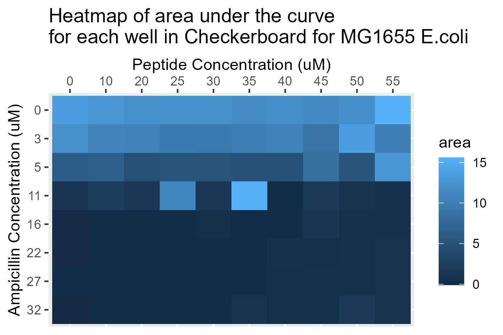 Overall, this supports the growth curve plot results that MG1655 is working expected as a control and that the peptide inhibits TEM-1 which is why there is no peptide effect on MG1655.
Comparing the PB9 and MG1655 Plots Side by Side
Overall, for the TEM-1 containing strain, the peptide when combined with the ampicillin does seem to inhibit growth more than either drug alone as demonstrated by lower AUC at higher peptide concentration (when paired with amp.) This combined with the MG1655 control data which does not seem to respond to the peptide supports the claim that the peptide is in fact able to bind and inhibit TEM-1 in the PB9 test strain. Of course more testing on different strains with multiple replicates will need to be done, and statistical analyses performed before any conclusions can be drawn.
THE END :)